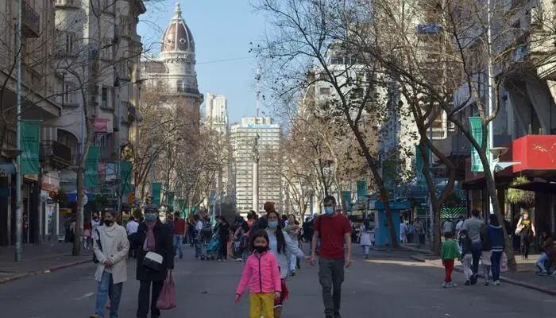

The traditional “Día del Centro” is held once a month, in addition to the traditional discounts at participating locations, there will be free parking. Frequently offers are available during a whole weekend in several payment methods.
Avenida 18 de Julio, from Ejido to Julio Herrera and Obes, will be pedestrian. During the day there will be traveling shows, artisan stalls, inclusive activities and much more.
The range of items is as wide and rich as it is extravagant. This fair is a good opportunity to learn more about the social reality of current Uruguay. You can buy traditional pasta for Sunday lunch, books, CDs, cassettes, pasta records, old relics, ornaments, spare parts, games, furniture and pets, among other items. The Tristán Narvaja fair, inaugurated in 1909, is one of the postcards of Montevideo. It began selling fruits and vegetables but quickly diversified and expanded, until it became one of the most characteristic walks in the capital.
Ciudad Vieja LibraryCiudad Vieja Entry

Centro SkywalkFeria Tristan Narvaja in Cordon 1Feria Tristan Narvaja in Cordon 2Entrepreneurs reunited in Centro